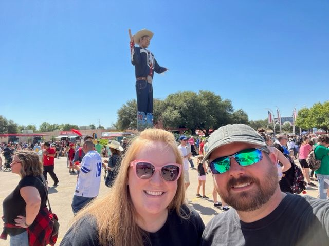

Bryan Morgan | WDD 130

Hello, world!
My name is Bryan Morgan and I'm from the Dallas, TX area. My wife is from the Salt Lake
City
area, and we like to joke that although she's from Zion, I'm from the Promised Land.
I love to watch the weather and I'm a certified storm spotter with the National Weather
Service, as well as a HAM raio operator. I enjoy PC gaming, woodworking in my litle
shop, and radio-controlled airplanes.
Although I have a little bit of programming experience in Java and took a couple of
HTML classes in high school, I consider myself a beginner and am already learning new
things. I'm looking forward to learning much more in this class.